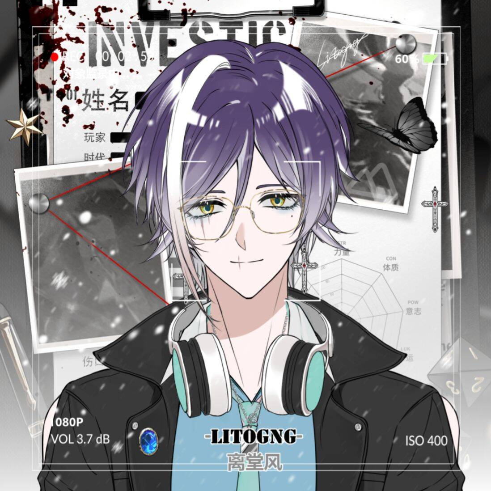

在明德私立学校的计算机教室里，唐镜玄老师的办公桌可能是全校最“乱”的一张——堆满了学生留下的U盘、几本翻到卷边的Python教材，以及一沓用回形针别好的“问题追踪卡”，每张卡片上工整地记录着某个学生某个下午来问过的bug和解决方案。
这份近乎偏执的条理，是唐镜玄作为计算机教师的底色。他的课堂从不追求热闹，程序运行的成功率却常年位居年级前列。2004班的同学回忆：“有一次我的算法死活跑不出结果，唐老师没有直接帮我改，而是跟我一起检查，还一边检查，一边问我代码逻辑。刚开始我根本不理解老师，觉得这太慢了，但是检查到第三遍，我自己发现了错误，也明白为什么会有错。那时我终于明白老师的苦心了。”
从代码到人心：独特的教学之道
比代码更复杂的，是十六七岁的人心。唐镜玄的“亲和”在年级里是出了名的——午休时常能看见他端着食堂的杯子，蹲在走廊边和学生聊游戏、聊番剧、聊最近哪道数学题出得像脑筋急转弯。但真正让同事服气的是他对待“最难搞”学生的方式。
即使是学生对他恶言相向、甚至朝他摔过键盘、提前离开，他也不会批评，不会皱眉，不会说一句重话。他只是安静地在放学后把同学叫到办公室，贴心地递上一瓶汽水，温和地开导他们。
这种耐心并非天赋，更多是一种选择。唐镜玄在教研组分享时说过一段话：“高中生正处在从孩子到成人的过渡期，很多时候他们表现出的对抗不是在针对我，而是在和某种更巨大的东西搏斗——可能是自我怀疑，可能是家庭压力，也可能只是前一天没睡好。如果我在这时候还回以重话，就等于告诉他们：你在最难的时候，大人们不会理解。这不是我的教育观。”

（图为唐镜玄老师工作照）润物无声：陪伴特招生成长
2019年秋季，明德私立学校启动首届“特招生计划”，为每位特招生配备“成长导师”，唐镜玄主动申请担任，负责带领高一（1）班和高一（2）班的特招生群体。不同于普通班主任的职责，成长导师更侧重心理陪伴与学业适应——对于这群从不同学校汇聚而来、家境与其他学生迥异且初入新环境的学生而言，这份陪伴并不轻松。
开学第一周，唐镜玄给每位特招生发了一张空白表格，让学生们填写“任何你想让老师知道的事”：喜欢吃什么、害怕什么、最近在烦恼什么、有没有不想回答的问题。在一张空白的表格面前，特招生们初来乍到产生的拘谨、不安与紧张，通通消解了。1910班一位特招生说，即使已经过去两年多了，那张空白表格依旧是他温暖的回忆。
“空白表格”保留下来，成为唐镜玄之后带的每一届特招生的惯例。2102班一位学生在“空白表格”上写道：“不太敢在课堂上举手，也不敢展示自己，怕作品没水平，别人会觉得我不该坐在这里。”唐镜玄看到后没有特意找她谈话，而是选择给学生一个惊喜。他在学生上交白皮书后，挑选出其中的优秀作品作为上课的案例，在课堂上收获了学生们的一众鼓掌叫好之声。课后，唐镜玄再把那位女生叫去，笑着鼓励她：“你看，你的作品非常棒，可以对自己多一些自信。”
到了学期末提交《成长发展白皮书》的阶段，唐镜玄更是逐份审阅，每份报告书背面都附上手写的批注，有些是学业建议，有些只是一句关怀的话：“这篇写得比上个月清晰多了，你是不是最近睡得好了一些？”
尊重与等待：他的教育哲学
在首届特招生学期总结会上，唐镜玄有一段话被德育处记录下来作为案例：“他们来到明德，不是来被改造的，是被看见的。我不需要他们迅速变得‘像这里的学生一样’，我只需要他们知道，在这里有一个大人不会因为他们的出身、口音或第一次考试的成绩而判定他们的价值。”
有人问过他，带特招生是不是额外花了很多时间。他说：“我并没有觉得是‘额外’。每份报告书、每次谈话，都是种子在土壤底下的动静。你看不见种子，但你知道，它就在下面，静静生长着。”
“学生们就像栽下的种子一样，我总是愿意相信，他们有无数可能。”唐镜玄笑着补充道：“我这个人没有其他的优点，就是愿意等。我自己也有孩子，在教育自己孩子的过程中，我更加知道学生们想要的是什么。很多时候他们不用你催促也不用你逼迫，只要耐心，他们就会自己发芽。”
唐镜玄老师每每在陌生的班级上第一堂课时，都会在板书上先留下自己姓名和教师邮箱：tangjingxuan@edu.mail.com。留姓名，是为了让学生认识他；留邮箱，是为了让学生信任他。这些年，他把自己的教师邮箱，当成了与学生沟通的“爱心邮箱”。“如果你有什么心事，遇到什么难处，或者只是有什么想说的话，可以发邮件给我，我只要看到就会回复。”这句承诺，他一做就是六年。
他这样解释自己做“爱心邮箱”的原因：“种子在发芽前经历了什么，我们这些人是看不到。因为在地下，在黑暗里。种子们会不会难过，会不会害怕，你单看那个土层是没法分辨的。我希望用我的关心，为它们增加一些破土而出的勇气。”
发芽需要时间，而时间需要等待。唐镜玄大概就是那个愿意等待每一粒种子生长的人。